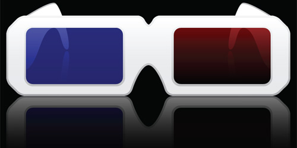

Anaglyph Online tools | |
|---|---|
What are anaglyphs?We see the world in 3D, because each eye sees a slightly different picture. The two images are then processes by our brain to produce our 3D view of the world. Anaglyphs use filters, to separate two different images encoded in a picture or movie to creat the same 3D effect. In most cinemas, the two images are encoded by different polarization of light and the cool 3D glasses you wear, separate the images for each eye. Using glasses like shown on the right, allows separating parts of an image by color in a red and cyan part for each eye. The tools below allow one to draw in 3D and using two webcams, take picture in 3D right from the browser. |
 Looking for glasses - check Amazon.com . |
Drawing PadClick the Start program button on the right to open a window running the drawing program. Use the mouse to draw lines. Explore the depth slider, and see how the lines appear above or below theplan of the computer screen. Once done, right click on the image to save it. Share with your friends or post on social media like any other image. |
|
Anaglyph WebcamTaking a picture in 3D required two webcams attached to the computer. Click the Start program button on the right to open a window running the program. The webcams should be mounted a typical eye separation distance apart and point in the same direction. Some adjustment to the camera position might be needed for best results. Click Take picture to snap a photo. Once done, right click on the image to save it. |
|